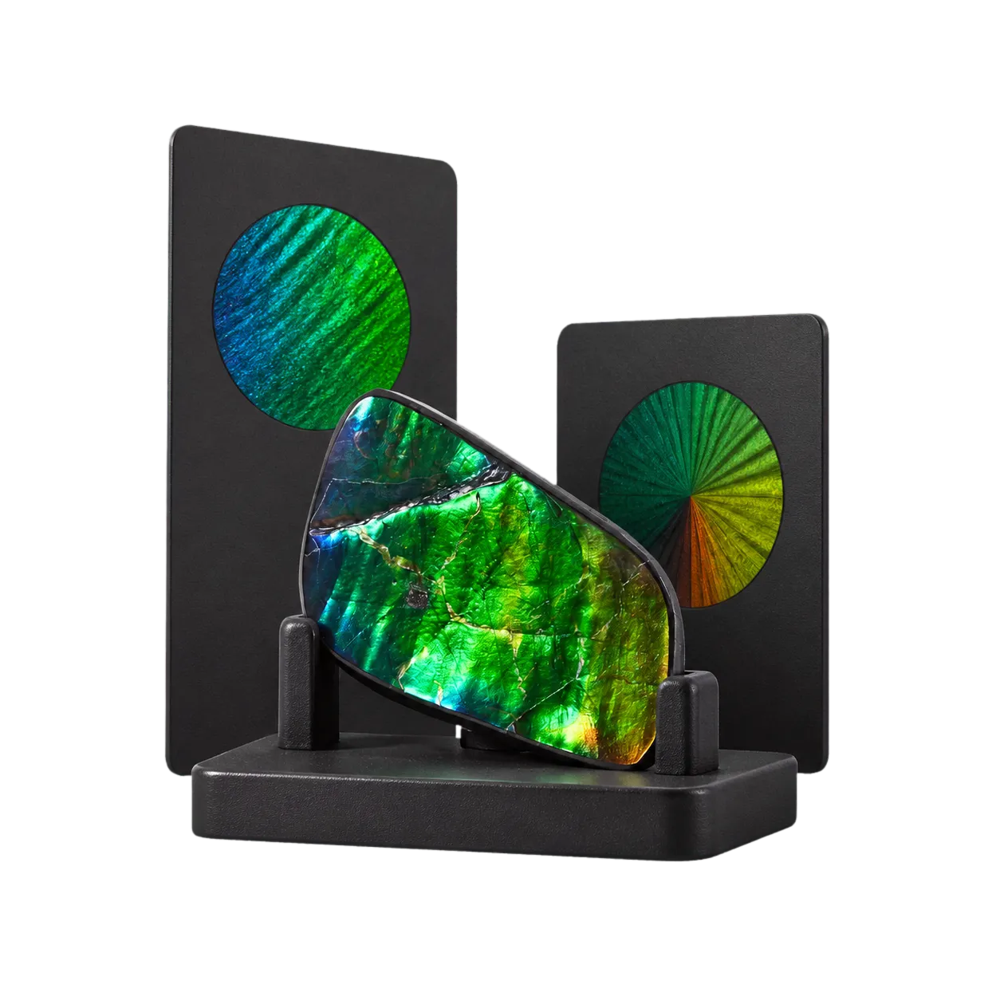
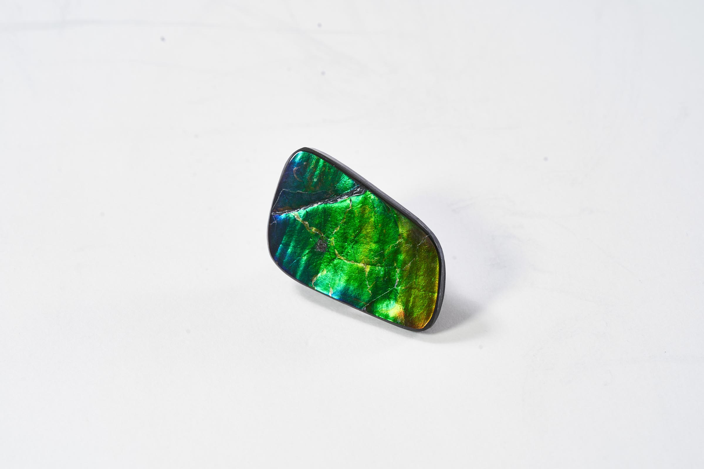
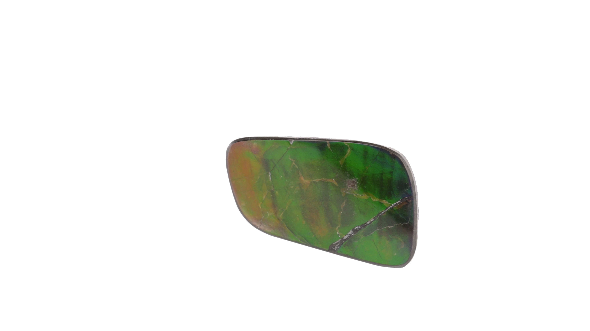

AAPOAKGY · Self-created commerce brand
From brand to checkout.
I formulated AAPOAKGY as a complete product and commerce system — defining the name, brand expression, product structure, functional flows, interface and checkout rather than treating the website as a standalone visual layer.
Explore the screen-flow library
The product challenge
Ammolite is visually compelling but difficult to buy with confidence online. Every specimen is unique; colour shifts with viewing angle; technical attributes matter; and a premium price asks for more evidence than a conventional product card can give. The experience needed to educate without overwhelming and sell without reducing each stone to decoration.
How can one brand make a complex natural object understandable, comparable and trustworthy from catalogue to payment?
Visit the live product →Forming the brand
Name the world before styling the screens
I developed the name and brand formulation around discovery, rarity and the changing character of ammolite. That positioning guided the tone of voice, visual restraint and the balance between scientific detail and premium presentation.
Turn uniqueness into a product model
The catalogue treats each specimen as an individual product with its own imagery, availability and attributes. I structured ways to browse by colour, product type, application and destiny, then defined the information needed to compare pieces without pretending that natural variation is standard inventory.
Make evaluation possible online
Product detail combines still photography, gallery views and a 360-degree turntable with dimensions, weight, origin, colour distribution and certification information. The sequence moves from visual attraction to progressively deeper evidence so a customer can decide how much detail they need.
Designing the commerce system
Connect discovery to decision
I designed the information architecture from education and filtered browsing through product detail, favourites and direct enquiry. The flow preserves the emotional draw of the material while making practical facts easy to locate and compare.
Carry certainty through checkout
I defined the functional journey through bag, delivery, payment, confirmation and order history. The checkout supports credit card, PayPal and AlipayHK, while preserving the identity of the exact one-off specimen the customer selected.
Design beyond the happy path
Availability, favourites, related products, guest continuity and member order history were considered as part of one operating model. That made the product less dependent on a single linear purchase and more useful across return visits and higher-consideration decisions.
Product truth before persuasion.
For a unique natural object, visual evidence is part of the interface: each view reduces uncertainty before checkout.


What the work proves
- Zero-to-one ownership: brand naming, product formulation, experience strategy and interface decisions were developed as one connected system
- Domain translated into UX: unique inventory, colour distribution, physical attributes and certification became usable product information rather than back-office data
- End-to-end commerce thinking: discovery, evaluation, purchase and post-purchase continuity all preserve trust in the exact specimen selected